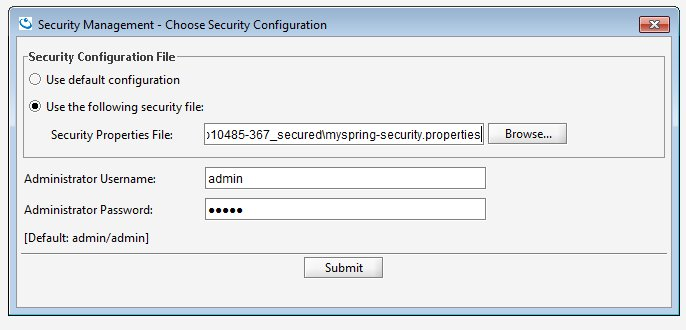

To provide other custom security implementations see the Custom Security section. One such custom security implementation is the Spring Security Bridge.
The default security file-based directory is first created when you try to manage the security directory (either using the UI or API).
The default file is created under .fsm is an abbreviation of File Security Manager.
When the file doesn't exist, we create a new file and an admin/admin user is added with both Manage Users and Manage Roles privileges. With this admin user you can start to manage the roles and users. The admin user has no privileges to perform any other operation. Of course, it can be deleted, and replaced with your own administrator.
The file can be changed while services are up and running. Changes to the file are monitored (see FileService.lastModified() API), which triggers a refresh for fetching the updated file contents. The refresh rate is platform dependent. Changes don't affect open sessions, only new established sessions will be aware of the change.
When a secured component is started, it looks for the security configuration properties in order to instantiate the security implementation. The default implementation does not require a properties file to exist, but it is essential if you would want to provide overrides to any of the extensions. The security configuration properties file is implementation specific. Here we describe the properties related to the file-based security manager implementation.
Any configurations that are applied can be seen by setting the logging level to CONFIG (see xap_logging.properties):
com.gigaspaces.security.level = CONFIG
The location of the directory file and its name are configurable using the com.gs.security.fs.file-service.file-path property key. The file-path is either a direct path to a file, relative path (to bin) or a resource in the classpath.
com.gs.security.fs.file-service.file-path = /opt/head/security/my-directory.fsm
File separators in a properties file are '/'.
The file extension doesn't have to be .fsm.
If the file doesn't exist, only a warning is displayed
You should specify in the UI (manage security) the path to security configuration file containing this property ,otherwise the default fsm file will be used.

There are some handy extension points which allow you to modify some of the defaults we have considered, and replace them with your suitable requirements. These are extensions which are relevant to this specific File-based implementation. It might not be relevant for other security implementations.
The Encoding mechanism is separated into two - password encoding and file-content encoding. Both of these can be changed.
The password encoder is used to encode the passwords stored in the file-based directory. The default password encoding algorithm is MD5. This is a one-way hash function that is used to encrypt the passwords when they are stored in the directory, and encrypt the passwords for authentication validation.
The PasswordEncoder interface exposes two methods:
public interface PasswordEncoder {
String encodePassword(String rawPass) throws EncodingException;
boolean isPasswordValid(String encPass, String rawPass) throws EncodingException;
}
To set your own password encoder:
com.gs.security.fs.password-encoder.class = eg.MyPasswordEncoder
The content encoder is used to encode/decode the user details, roles and authorities stored in the file-based directory. The default content encoding algorithm is AES 128-bit. This is a two-way function that requires a private key to encrypt and decrypt.
An AES compliant private key (of type javax.crypto.SecretKey) named gs-private.key can be placed in the classpath to replace our default private key. Similar to a local keystore in SSL, to prevent clients the ability to connect if they only hold the password.
The ContentEncoder interface exposes two methods:
public interface ContentEncoder {
public byte[] encode(Object obj) throws EncodingException;
public Object decode(byte[] bytes) throws EncodingException;
}
To set your own content encoder:
com.gs.security.fs.content-encoder.class = eg.MyContentEncoder
By default, we load a file from the local file system. We also provide a means to "download" a file from a URL. If you want to further customize, you can implement the FileService interface.
To configure the URL file service, you need to switch the default file-service implementation class and provide the parameters parsed by the URLFileService implementation - in this case a URL.
com.gs.security.fs.file-service.class = com.gigaspaces.security.fs.URLFileService
com.gs.security.fs.file-service.url = http://www.gigaspaces.com/download/attachments/gs-directory.fsm
The default file-service implementation class is: com.gigaspaces.security.fs.LocalFileService
You must manage the security directory as a local file; upload the file to an HTTP server, and only then configure your services with the above properties. If your HTTP server allows write-access, then the URLFileService can also be used for managing your directory; the writeToFile method (see interface) will use the output stream to write through this connection.
The FileService interface defines access to the security directory file:
public interface FileService {
public void init(Properties properties) throws IOException;
public boolean fileExists();
public byte[] readFromFile() throws IOException;
public void writeToFile(byte[] bytes) throws IOException;
public long lastModified();
}
To set your own file service:
com.gs.security.fs.file-service.class = eg.MyFileService